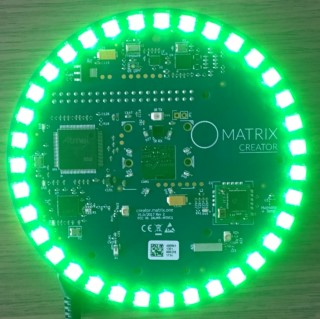
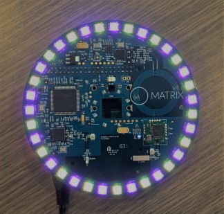
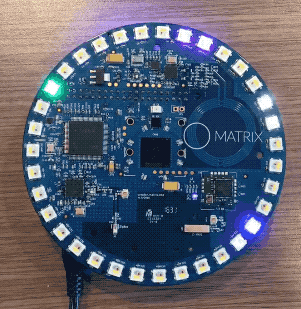

Everloop
HAL Example
Device Compatibility


Overview
The Everloop interface supports:
- Setting the RGBW colors for each individual LED.
Code Examples
Below are examples of how to interface with the Everloop in MATRIX HAL.
Everloop function references can be found here.
The command below will compile each example. Be sure to pass in your C++ file and desired output file.
g++ -o YOUR_OUTPUT_FILE YOUR_CPP_FILE -std=c++11 -lmatrix_creator_hal
Everloop Green
The following section shows how to set the Everloop to green. You can download this example here.
Result

Include Statements
To begin working with the Everloop you need to include these header files.
// System calls #include <unistd.h> // Input/output streams and functions #include <iostream> // Interfaces with Everloop #include "matrix_hal/everloop.h" // Holds data for Everloop #include "matrix_hal/everloop_image.h" // Communicates with MATRIX device #include "matrix_hal/matrixio_bus.h"
Initial Setup
You'll then need to setup MatrixIOBus in order to communicate with the hardware on your MATRIX device.
int main() { // Create MatrixIOBus object for hardware communication matrix_hal::MatrixIOBus bus; // Initialize bus and exit program if error occurs if (!bus.Init()) return false;
Main Setup
Now we will create our EverloopImage and Everloop object and use it to set the Everloop to green for 10 seconds.
// The following code is part of main() // Holds the number of LEDs on MATRIX device int ledCount = bus.MatrixLeds(); // Create EverloopImage object, with size of ledCount matrix_hal::EverloopImage everloop_image(ledCount); // Create Everloop object matrix_hal::Everloop everloop; // Set everloop to use MatrixIOBus bus everloop.Setup(&bus); // For each led in everloop_image.leds, set led value for (matrix_hal::LedValue &led : everloop_image.leds) { led.red = 0; // Set green to 100 led.green = 100; led.blue = 0; led.white = 0; } // Updates the Everloop on the MATRIX device everloop.Write(&everloop_image); // Output everloop status to console std::cout << "Everloop set to green for 10 seconds." << std::endl; for (int i = 0; i <= 10; i++) { // Output time remaining to console std::cout << "Time remaining (s) : " << 10 - i << std::endl; // Sleep for 1 second usleep(1000000); } // For each led in everloop_image.leds, set led value to 0 for (matrix_hal::LedValue &led : everloop_image.leds) { // Turn off Everloop led.red = 0; led.green = 0; led.blue = 0; led.white = 0; } // Updates the Everloop on the MATRIX device everloop.Write(&everloop_image); return 0; }
Everloop Yellow/Purple
The following section shows how to set the Everloop to yellow and purple (with color blending). You can download this example here.
Result

Include Statements
To begin working with the Everloop you need to include these header files.
// System calls #include <unistd.h> // Input/output streams and functions #include <iostream> // Interfaces with Everloop #include "matrix_hal/everloop.h" // Holds data for Everloop #include "matrix_hal/everloop_image.h" // Communicates with MATRIX device #include "matrix_hal/matrixio_bus.h"
Initial Setup
You'll then need to setup MatrixIOBus in order to communicate with the hardware on your MATRIX device.
int main() { // Create MatrixIOBus object for hardware communication matrix_hal::MatrixIOBus bus; // Initialize bus and exit program if error occurs if (!bus.Init()) return false;
Main Setup
Now we will create our EverloopImage and Everloop object and use it to set the Everloop to yellow and purple for 10 seconds.
// The following code is part of main() // Holds the number of LEDs on MATRIX device int ledCount = bus.MatrixLeds(); // Create EverloopImage object, with size of ledCount matrix_hal::EverloopImage everloop_image(ledCount); // Create Everloop object matrix_hal::Everloop everloop; // Set everloop to use MatrixIOBus bus everloop.Setup(&bus); // For each led in everloop_image.leds, set led value for (int i = 0; i < everloop_image.leds.size(); i++) { // When remainder is zero set led to purple if (i % 2 == 0) { // Blending blue and red to make purple everloop_image.leds[i].blue = 40; everloop_image.leds[i].red = 40; } // Else set led to yellow else { // Blending green and red to make yellow everloop_image.leds[i].green = 40; everloop_image.leds[i].red = 60; } } // Updates the Everloop on the MATRIX device everloop.Write(&everloop_image); // Output everloop status to console std::cout << "Everloop set to yellow and purple for 10 seconds." << std::endl; for (int i = 0; i <= 10; i++) { // Output time remaining to console std::cout << "Time remaining (s) : " << 10 - i << std::endl; // Sleep for 1 second usleep(1000000); } // For each led in everloop_image.leds, set led value to 0 for (matrix_hal::LedValue &led : everloop_image.leds) { // Turn off Everloop led.red = 0; led.green = 0; led.blue = 0; led.white = 0; } // Updates the Everloop on the MATRIX device everloop.Write(&everloop_image); return 0; }
Everloop Rainbow
The following section shows how to set the Everloop to rainbow. You can download this example here.
Result

Include Statements
To begin working with the Everloop you need to include these header files.
// System calls #include <unistd.h> // Input/output streams and functions #include <iostream> // Included for sin() function. #include <cmath> // Interfaces with Everloop #include "matrix_hal/everloop.h" // Holds data for Everloop #include "matrix_hal/everloop_image.h" // Communicates with MATRIX device #include "matrix_hal/matrixio_bus.h"
Initial Setup
You'll then need to setup MatrixIOBus in order to communicate with the hardware on your MATRIX device.
int main() { // Create MatrixIOBus object for hardware communication matrix_hal::MatrixIOBus bus; // Initialize bus and exit program if error occurs if (!bus.Init()) return false;
Main Setup
Now we will create our EverloopImage and Everloop object and use it to set the Everloop to rainbow for 10 seconds.
// The following code is part of main() // Holds the number of LEDs on MATRIX device int ledCount = bus.MatrixLeds(); // Create EverloopImage object, with size of ledCount matrix_hal::EverloopImage everloop_image(ledCount); // Create Everloop object matrix_hal::Everloop everloop; // Set everloop to use MatrixIOBus bus everloop.Setup(&bus); // Variables used for sine wave rainbow logic float counter = 0; const float freq = 0.375; // 10 sec loop for rainbow effect 250*40000 microsec = 10 sec for (int i = 0; i <= 250; i++) { // For each led in everloop_image.leds, set led value for (matrix_hal::LedValue &led : everloop_image.leds) { // Sine waves 120 degrees out of phase for rainbow led.red = (std::sin(freq * counter + (M_PI / 180 * 240)) * 155 + 100) / 10; led.green = (std::sin(freq * counter + (M_PI / 180 * 120)) * 155 + 100) / 10; led.blue = (std::sin(freq * counter + 0) * 155 + 100) / 10; // If MATRIX Creator, increment by 0.51 if (ledCount == 35) { counter = counter + 0.51; } // If MATRIX Voice, increment by 1.01 if (ledCount == 18) { counter = counter + 1.01; } } // Updates the LEDs everloop.Write(&everloop_image); // If i is 0 (first run) if (i == 0) { // Output everloop status to console std::cout << "Everloop set to rainbow for 10 seconds." << std::endl; } // If i is cleanly divisible by 25 if ((i % 25) == 0) { std::cout << "Time remaining (s) : " << 10 - (i / 25) << std::endl; } // Sleep for 40000 microseconds usleep(40000); } // Updates the Everloop on the MATRIX device everloop.Write(&everloop_image); // For each led in everloop_image.leds, set led value to 0 for (matrix_hal::LedValue &led : everloop_image.leds) { // Turn off Everloop led.red = 0; led.green = 0; led.blue = 0; led.white = 0; } // Updates the Everloop on the MATRIX device everloop.Write(&everloop_image); return 0; }
Everloop Moving Dots
The following section shows how to set the Everloop to moving dots. You can download this example here.
Result

Include Statements
To begin working with the Everloop you need to include these header files.
// System calls #include <unistd.h> // Input/output streams and functions #include <iostream> // Included for sin() function. #include <cmath> // Interfaces with Everloop #include "matrix_hal/everloop.h" // Holds data for Everloop #include "matrix_hal/everloop_image.h" // Communicates with MATRIX device #include "matrix_hal/matrixio_bus.h"
Initial Setup
You'll then need to setup MatrixIOBus in order to communicate with the hardware on your MATRIX device.
int main() { // Create MatrixIOBus object for hardware communication matrix_hal::MatrixIOBus bus; // Initialize bus and exit program if error occurs if (!bus.Init()) return false;
Main Setup
Now we will create our EverloopImage and Everloop object and use it to set the Everloop to moving dots for 10 seconds.
// The following code is part of main() // Holds the number of LEDs on MATRIX device int ledCount = bus.MatrixLeds(); // Create EverloopImage object, with size of ledCount matrix_hal::EverloopImage everloop_image(ledCount); // Create Everloop object matrix_hal::Everloop everloop; // Set everloop to use MatrixIOBus bus everloop.Setup(&bus); // Keeps track of location of moving dots long counter = 0; // 10 sec loop for rainbow effect 500*20000 microsec = 10 sec for (int i = 0; i <= 500; i++) { // For each led in everloop_image.leds, set led value to 0 for (matrix_hal::LedValue &led : everloop_image.leds) { // Turn off Everloop led.red = 0; led.green = 0; led.blue = 0; led.white = 0; } // Set led color per led everloop_image.leds[(counter / 2) % everloop_image.leds.size()].red = 40; everloop_image.leds[(counter / 2) % everloop_image.leds.size()].blue = 40; everloop_image.leds[(counter / 7) % everloop_image.leds.size()].green = 60; everloop_image.leds[(counter / 11) % everloop_image.leds.size()].blue = 60; everloop_image .leds[everloop_image.leds.size() - 1 - (counter % everloop_image.leds.size())] .white = 20; // Updates the Everloop on the MATRIX device everloop.Write(&everloop_image); // Increment counter counter++; // If i is 0 (first run) if (i == 0) { // Output everloop status to console std::cout << "Everloop set to moving dots for 10 seconds." << std::endl; } // If i is cleanly divisible by 50 if ((i % 50) == 0) { // Output time remaining to console std::cout << "Time remaining (s) : " << 10 - (i / 50) << std::endl; } // Sleep for 20000 microseconds usleep(20000); } // Updates the Everloop on the MATRIX device everloop.Write(&everloop_image); // For each led in everloop_image.leds, set led value to 0 for (matrix_hal::LedValue &led : everloop_image.leds) { // Turn off Everloop led.red = 0; led.green = 0; led.blue = 0; led.white = 0; } // Updates the Everloop on the MATRIX device everloop.Write(&everloop_image); return 0; }